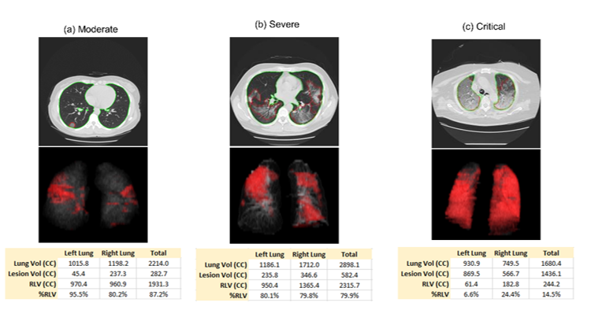

CT Quantification and Machine-learning Models for Assessment of Disease Severity and Prognosis of COVID-19 Patients
This study was to investigate the CT quantification of COVID-19 pneumonia and its impacts on the assessment of disease severity and the prediction of clinical outcomes in the management of COVID-19 patients.

Cai, W., Liu, T., Xue, X., Luo, G., Wang, X., Shen, Y., Fang, Q., Sheng, J., Chen, F. and Liang, T., 2020. CT Quantification and Machine-learning Models for Assessment of Disease Severity and Prognosis of COVID-19 Patients. Academic radiology, 27(12), pp.1665-1678.
Comparison of CT radiomics models for identifying and stratifying ARDS in COVID-19 pneumonia